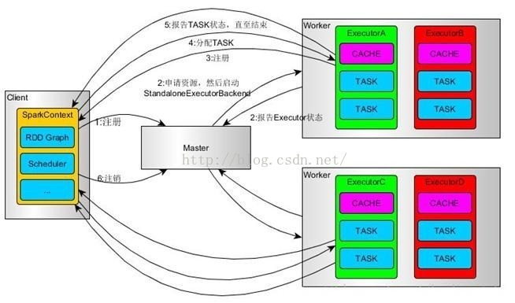
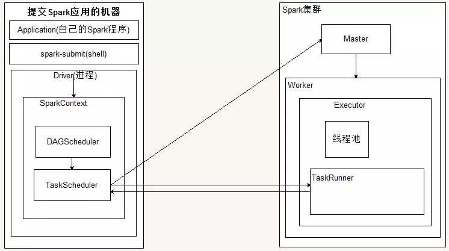
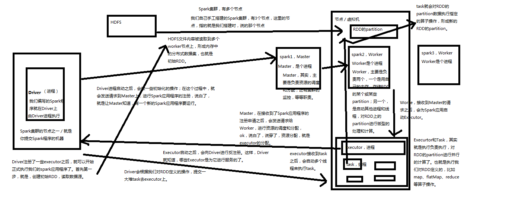
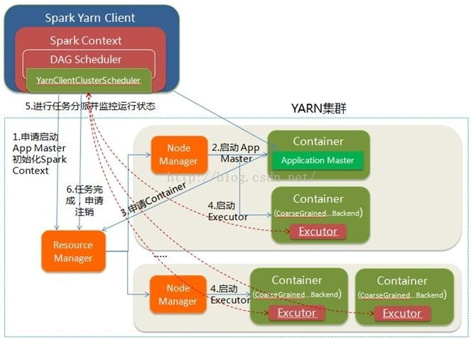
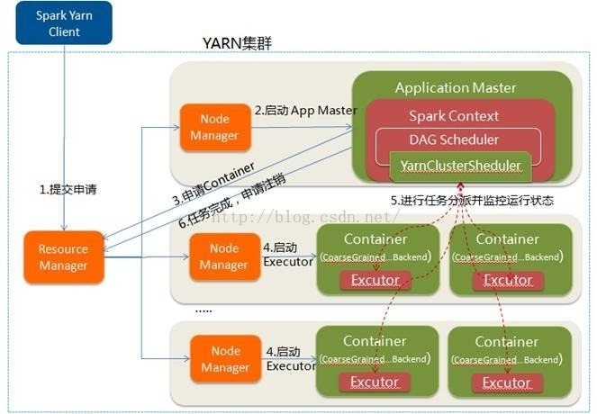

Spark工作流程
Spark的三种提交模式是什么？
- 本地模式
Spark不一定非要跑在hadoop集群，可以在本地，起多个线程的方式来指定。将Spark应用以多线程的方式直接运行在本地，一般都是为了方便调试，本地模式分两类- local：只启动一个executor
- local[k]:启动k个executor
- standalone模式
分布式部署集群， 自带完整的服务，资源管理和任务监控是Spark自己监控，这个模式也是其他模式的基础。 - Spark on yarn模式
分布式部署集群，资源和任务监控交给yarn管理，但是目前仅支持粗粒度资源分配方式，包含cluster和client运行模式，cluster适合生产，driver运行在集群子节点，具有容错功能，client适合调试，dirver运行在客户端
Spark-standalone工作流程
使用SparkSubmit提交任务的时候(包括Eclipse或者其它开发工具使用new SparkConf()来运行任务的时候)，Driver运行在Client；使用SparkShell提交的任务的时候，Driver是运行在Master上



文字概括：
1、spark-submit 提交了应用程序的时候，提交spark应用的机器会通过反射的方式，创建和构造一个Driver进程，Driver进程执行Application程序，
2、Driver根据sparkConf中的配置初始化SparkContext,在SparkContext初始化的过程中会启动DAGScheduler和taskScheduler
3、taskSheduler通过后台进程，向Master注册Application，Master接到了Application的注册请求之后，会使用自己的资源调度算法，在spark集群的worker上，通知worker为application启动多个Executor。
4、Executor会向taskScheduler反向注册。
5、Driver完成SparkContext初始化
6、application程序执行到Action算子时，就会创建Job。并且由DAGScheduler将Job划分多个Stage,每个Stage 由TaskSet 组成
7、DAGScheduler将TaskSet提交给taskScheduler
8、taskScheduler把TaskSet中的task依次提交给Executor
9、Executor在接收到task之后，会使用taskRunner来封装task（TaskRuner主要将我们编写程序，也就是我们编写的算子和函数进行拷贝和反序列化）,然后，从Executor的线程池中取出一个线程来执行task。就这样Spark的每个Stage被作为TaskSet提交给Executor执行，每个Task对应一个RDD的partition,执行我们的定义的算子和函数。直到所有操作执行完为止。
Spark on yarn工作流程
client运行模式

文字概括：
1、在客户端通过Spark-submit提交一个Application。
2、在客户端上启动一个Driver进程,Driver在客户端本地运行。
3、Driver启动完成后,client会向RS (ResourceManager)发送请求(给我找一台NM,我要启动AM),同时在SC（client上）中创建DAGScheduler和TaskScheduler。
4、RS接受到了请求,找到某一台NM了, Rs会向NM进程发送一条消息(给我启动一个Container容器,我要启动AM进程),NM分配一个container，并在container中开启AM。
5、AM已经启动了,同时client中的SC初始化完成之后,SC与AM进行通信,向RM注册,根据任务信息向RM申请资源, AM会向RS发送请求(给我一批资源,我要运行Application)
6、RS接受了请求,给他找了一批NM回给AM,AM申请到资源之后，与NM进行通信，要求在它申请的container中开启CoarseGrainedExecutorBackend(executor)。Executor在启动之后会向SC注册并申请task。
7、AM会向这一批NM发送消息(你给我启动一个Container,我要启动Executor)。
8、Executor会反向注册给客户端里启动的Driver进程
9、Driver就有了一批计算进程(Executor),SC分配task给executor，executor执行任务并向Driver（运行在client之上的）汇报，以便客户端可以随时监控任务的运行状态。
10、任务运行完成之后，client的SC向RM注销自己并关闭自己。
总结：Applicationmaster作用：
1、 为当前的Application申请资源
2、 给NM发送消息；启动Container（一组计算单位）Executor
注意：初始化后的SC=初始化后的Driver=Application
Cluster运行模式

文字概括：
1、spark-submit脚本提交，向yarn（RM）中提交ApplicationMaster程序、AM启动的命令和需要在Executor中运行的程序等。
2、RM收到请求之后，选择一个NM，在其上开启一个container，在container中开启AM，并在AM中完成SC的初始化。
3、SC(AM)向RM注册并请求资源，这样用户可以在RM中查看任务的运行情况。RM根据请求采用轮询的方式和RPC协议向各个NM申请资源。
4、AM申请到资源之后,与对应的NM进行通信,要求在其上获取到的Container中开启CoarseGrainedExecutorBackend(executor),executor 开启之后，向AM中的SC注册并申请task。
5、AM中的SC分配task给executor，executor运行task并向AM中的SC汇报自己的状态和进度。
6、应用程序完成之后（各个task都完成之后），AM向RM申请注销自己并关闭自己。
client vs cluster
1、client模式Driver在客户端启动 测试
2、cluster模式Driver是在yarn集群中某一台NM中启动生产环境
3、ApplicationMaster在不同的模式下作用不一样:
ApplicationMaster在client模式下:
(1)为当前的Application申请资源
(2)给NM发送消息, NM启动Container(一组计算资源的单位) Executor
ApplicationMaster在cluster模式下:
(1)为当前的Application申请资源
(2)给NM发送消息, NM启动container(一组计算资源的单位)Executor
(3)任务调度
注意事项：
1、 yarn集群所在的节点必须有spark的安装包
2、 Spark跑在Yarn集群上，不需要启动Spark standalone集群，不需要master worker这一些节点
master->RS->RM ResourceManager
Worker->NM NodeManager